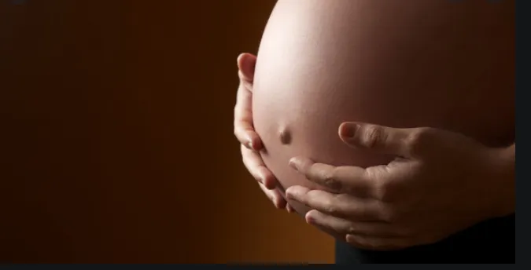

孖仔帮
公众号ID：twinsbang
关注
文|宸希妈妈
网图|侵删
【帮主】圆圈妈妈：新冠疫情在武汉大爆发期间，我带着圆圈躲在农村的深山老林里大气不敢出，有亲戚好友过来窜门，先全身喷一遍酒精消毒，门外静候片刻，方可批准进门。
庆幸有个安全的地儿可以躲避疫情，然而武汉的这位孕妈妈，却要顶着32周的孕肚，冒着疫情风险，穿梭在人满为患的医院里，不知道下一秒会不会轮到自己。
她，是个单绒双羊双胞胎妈妈，孕20周时被确诊sIUGR 3期（双胎选择性生长受限），34周整剖腹生下一对双胞胎姐妹花。
这是一个正能量的故事，不对，应该说是奇迹，双胞胎顽强生命力创造的奇迹。
今天这篇是她的经历分享。
初怀孕，惊险！
2019年8月初，我刚刚加班完一个通宵，凌晨4点多回家，下身突然出了点血，本以为是大姨妈终于来了（晚了几天），没太在意。
白天又去上班，到了下午感觉头晕乏力，像感冒发烧的症状，就去找行政拿点感冒药吃，正好当时行政办公室门锁着没人应，又去了校医院（公司属于校企，在大学校园里上班），准备量量体温，买个退烧药吃，结果校医院没开门，暑假期间装修暂不开诊，又准备去附近诊所看看，一看天气太热（火炉武汉）想想又算了，估计回家睡个觉就好了。
回家后感觉大姨妈不太对劲，怎么就夜里流了一点点，白天就没有了，难道不是大姨妈？已经超时一个多星期了，怎么大姨妈还不来呢？思来想去，脑子里突然砸进来一个念头，不会是怀孕了吧？（没刻意避孕，也没刻意备孕）。
当时手头正好有一支验孕棒，赶紧拿来试了下，结果显示两条杠！竟然真的怀孕了！第二天一早，我跟老公又跑去医院，抽血再次确认，确实已经怀孕4周。
再回想自己前一天，差点作死啊！如果当时行政在，拿了感冒药……或者当时校医院开门了……或者不惧酷热的我去了附近诊所……越想越后怕又万幸，也许这就是冥冥之中2个宝宝的顽强生命力在发挥神秘作用呢！
双胞胎？！惊喜惊吓！
7周的时候，我第一次躺在产科B超的床上，听到医生说，你这好像是双胞胎，你知道么，我感觉自己仿若听不懂，医生又重复说了几次，是双胞胎！
我当时的心情实在很复杂，有点惊喜有点惊吓，出来后跟老公说，他也是一副吃了瘪的表情，又觉得自己很牛叉，随随便便就中了。
回家后，我就一直盯着b超单上每个字看了又看，有个地方写着“单绒双羊”，不明白是什么意思，就百度查了下，一查才知道双胞胎还分这么多种，最安全的是双绒双羊，最危险的是单绒单羊，我这种单绒双羊是中间的，提到最多的风险是双胎输血综合征，我当时对这种低概率的并发症并没当回事，赶紧给双方家里人打电话报喜了事。
sIUGR，双胎选择性生长受限，
绝望无助！
知道是双胞胎后，我开始每个月去中南医院产检，一直都挺正常的，直到20周做四维彩超时，提示双胎体重相差35%，有选择性生长受限。
本来挂的是普通号医生，看结果后立刻给我转诊到当天的专家号李家福，等号等到晚上8点多，李家福建议我们先做羊水穿刺来看看基因有没有问题，但是他说他也不清楚我这种单绒双羊的情况，羊水穿刺是穿1次还是穿2次，就留了一个护士电话让我问护士。
当时就觉得很不专业，后来我联系那个护士，她让我挂马主任的号，说她是这一块的专家，于是我又等到周一挂马主任的号，马主任看了我的B超单后，说很危险，要我立刻转诊到上海一妇婴，因为中南医院没有双胎宫内干预的条件。
中南医院在武汉也是三甲医院，听她这么一说，我已经快憋不住要哭，当天下午又赶去武汉最好的协和医院，找到擅长双胎的教授夏革清，重新B超，加查了脐血流，最终确诊为双胎选择性生长受限，sIUGR的3型，即双胎体重相差25%以上，且脐动脉舒张末期血流间歇性缺失。
不过夏教授没有说转诊，她说她负责过不少类似病例，大部分的结果都是好的，给我开了肝素针，每天打，说是可以调节S/D值，但她也说这个肝素针可能有效也可能无效，看个体差异，然后要做好监测，每2周复查羊水和脐血流，到28周时候可以住院保胎，优化胎盘功能，尽量延长孕周到34周，但是早产是肯定的。
辗转医院的过程中，我们自己也在网上查了很多资料，包括国外在sIUGR这一块的最新研究文献，都说没有什么好的确实有效的治疗方案，打肝素针大概率是没啥用的。
上海一妇婴也确实是国内在宫内干预这一块做的最早、最成熟的医院，于是我们还是决定去上海一妇婴再看看，也许有什么新的有效治疗不知道呢。
赶往上海一妇婴后，再次重新B超，医生又看了所有我的过往B超单，也确诊为sIUGR的3型，拿了几张彩图，给我讲解为什么会有一个小宝宝生长受限。
首先这个小宝宝是脐带边缘插入，位置不好，胎盘所占面积比另一个大宝宝小很多；其次这个小宝宝的脐动脉舒张末期血流有时有，有时缺失，从胎盘获取营养的能力就很差；最后，这2个宝宝在胎盘上的血管并不是完全独立各用各的，而是有部分是交融共用的，这就导致当1个宝宝出现问题，另一个宝宝跟着出现急性输血的可能很大，所以也不适合做减胎。
给我们的建议是，要么现在就引产2个都不要，要么就继续保胎监测，但随时有可能1个胎死腹中，如果发现及时，及时抢救另一个，还有可能保住1个。
即使最好的结果，2个都顺利生下来，也一定是早产儿，还有15%的脑瘫概率，治疗和预后会花费大量财力、人力和精力。
我说打肝素针呢，这个医生都摇头说这些都没用，我说我多吃点营养，不上班了完全卧床休息呢，医生摇头说“你做什么都没用的”。
虽然已经做好心理准备，但听到“你做什么都没用”，还是万念俱灰，绝望难受，妈妈该拿什么拯救你们呢，上海一妇婴已经是国内在这一领域最好的医院了，真的是没有办法了吗？
她们不放弃，我也不放弃！
是引产，还是继续保胎，我跟家里人意见分歧了，连在老家的爸爸都在劝我早点引产，我收到的所有信息都是负面的，但我却觉得医生说的都是最差的情况，而最差的情况出现概率都不超过20%，也就是说还有80%多是好的！
那时候已经22周了，已经感觉到胎动了，2个小宝宝每天动的很欢实，他们为了到这个世界上来，让公司行政办公室门锁了，让校医院关门了，这么拼命的想告诉妈妈，我们来了，这么顽强的生命，会敌不过那20%的概率？
于是我跟老公决定，再给宝宝们一次机会，如果到28周前，有恶化的指标，比如从3型恶化到2型，或者真的出现一胎胎死腹中，那就是母女缘分未到，天意如此，但如果宝宝们都好好的，胎动正常，没有新的恶化指标，她们不放弃，我是不会放弃的！。
回武汉后，我还在协和医院做每2周一次的B超，打着都说没用的肝素针，由于打的太多，我的胳膊、肚子等下针的地方，都淤青一片，像被家暴了。
每两周一次的B超，脐血流一直是时有时无，也就是说一直是3型，没有恶化到2型，于是我更下定决心继续保胎！
到27周多时，我在夏教授安排下住进了协和医院保胎病房，具体治疗包括每天打硫酸镁、肝素、氨基酸营养液，说是能优化胎盘，延长孕周，促进宝宝生长。
原计划是治疗7天，结果碰上新冠疫情爆发，协和医院又是主战场，产科病房把不是马上就要生的产妇全都劝出了院，于是我第5天，也就是1月21号就出院了。
武汉新冠疫情，雪上加霜！
出院回家后，也是受疫情影响，在家里一呆就是一个多月，全靠之前买了一个胎心仪，每天晚上找到2个宝宝的胎心，听一会才能睡觉。
直到32周的时候，想起之前夏教授说32周还要再做一轮优化治疗，就打电话给协和产科病房咨询，得到的回复是疫情期间，产科只接收急诊，不能保胎，除非马上就剖。夏革清教授也一直联系不上，听说是被隔离了。
优化治疗做不了，但普通产检还是想做，毕竟好久没做b超有点心虚，于是2月21日，我去了省妇幼做产检，B超结果出来后，省妇幼的医生一看就叫我立马住院做剖腹手术，说一胎的脐血流缺失，随时胎死。
但当时2个宝宝体重都很不好，大的29周，小的27周，都比32周落后很多，即使现在拿出来，可能也很难存活，而且脐血流缺失是一直就有的，宝宝们都坚持这么久了，胎心监护也做的挺好的，胎动也挺好，我是希望尽量多在肚子里待一天，出来之后各项指标就更好一些。
于是，又冒着疫情风险，去了协和医院产科，病房一开始也是拒绝收我保胎，但经过我们苦苦哀求，我老公都跪下了，加上我本来就是他们的老病人，最后还是勉强收入院。
当时正是疫情高峰期，我跟老公都是做了胸部ct，排除新冠肺炎后才收入院，我住的病房楼下一层就是隔离区，很是危险。
而且，医生资源紧张，很多医生都去了前线，连妇产科医生都去，导致病房这边医生严重不足，很多妇科的医生过来产科这边凑数，大部分医生都不太懂我这个情况，还有个妇科医生硬说我是双胎输血综合征，根本不知道双输最主要特征不是体重差，而是羊水差很多，而我2个宝宝羊水一直是差不多的。就是这么一批不靠谱的值班医生！
我住院当天做了b超和胎心监护，结果跟在省妇幼做的差不多，但协和这边淡定一些，没让我赶紧生，甚至说我做完保胎治疗就可以回家了，于是又是每天打硫酸镁，打肝素，打营养液，还有促肺针。
几天后又做了1个B超，结果提示一胎羊水过少，值班医生立马让我剖，我心想可能这几天在医院没怎么好好喝水，就坚持要求隔几天再复查，于是又隔了2天复查，这回测出来羊水比上回多一些，但还是不多，已经到临界值2cm，我还是要求过几天再复查，如果是持续在减少就剖。
由于我坚持不肯手术，每天的查房医生和值班医生一看到我，就像看着一个不定时炸弹，脸色都很差，口气越来越恶劣，劝我赶紧剖，不剖就签字，我一开始还很淡定，但天天这么被催，加上胎心监护有时候不太好，也开始紧张的晚上睡不着觉，噩梦连连。
心态崩溃，剖腹产
就这样，一直到33周+6，又复查了B超，宝宝没怎么长，羊水也还是那么少，而且之前一直正常的大宝宝的羊水也开始减少了，我的心态开始坚持不住，也是子宫里真的已经不适合她们生存，也许真的该出来了，也许出来是最后的机会了。
于是那一天，3月1号晚上，我同意了马上手术，就在次日3月2号凌晨2点，34周整，剖腹产。手术迷迷糊糊中，我听到医生说，宫口已经开了，幸亏剖的及时。
大概十几分钟后，一声微弱的婴儿啼哭声，我睁开眼就看到2个一模一样粉嫩的的小脸，医生说是女儿，心心念念的女儿！1个1kg，1个1.4kg，比B超算的还要轻，还没来得及细看，就马上被转到了新生儿科。
生产后，我很快就出院了，但2个宝宝还在新生儿科住院，在经历了感染、肺炎、呼吸暂停等重重难关后，妹妹在第14天时出院，姐姐在第47天时出院，出来时候都还只有3斤多，一副营养不良的干瘪样子。
经过几个月日日夜夜的悉心照料，到现在5个月都长成十几斤的健康宝宝了，也没有之前一直担心的脑瘫，满月体检合格，3个月体检时做了头颅核磁共振、心脏彩超等一堆检查，都没毛病，发育情况一直正常，3个月就会抬头，现在有一个已经会翻身，另一个也快了，心里一块大石头总算落地。也总算有时间回顾下我和2个小天使的这段从怀孕到保胎到生产的奇迹旅程。
写在最后
如果正在看的你，也刚刚遇上sIUGR或者其他复杂的双胎并发症，我想告诉你的是，目前医学在双胎宫内治疗这一块还有很多空白，很多未知。
比如至今都解释不清楚为什么我的子宫里会出现选择性生长受限，我们以为生孩子这种几亿年的事，应该已经被研究的透透的，任何问题都应该是有解决办法的，但实际上，在很多前沿领域医学并没有我们以为的那样先进。
当科学不管用的时候，自己更要相信生命自身顽强的生命力，多一份坚持，多给生命一些机会，也会多一些可能。
不轻易放弃，即使最终未能如意也可以无悔。
-END-
作者/双胞胎姐妹花宸希妈妈@Nancy
排版/圆圈妈妈
写手招募
如果你是爱分享的双胞胎爸爸或妈妈
欢迎投稿至孖仔帮【双胎专栏】
分享出你和双胞胎的成长故事
添加小助手微信sgguy-com
备注“投稿”
今日互动话题
#新冠疫情下的双胞胎家庭，你经历了什么？#
评论区聊一聊呗！
微信公众号：孖仔帮
ID : twinsbang
专注双胞胎孕育，养育，教育经验分享
扫码关注我们
点一下你会更好看耶

